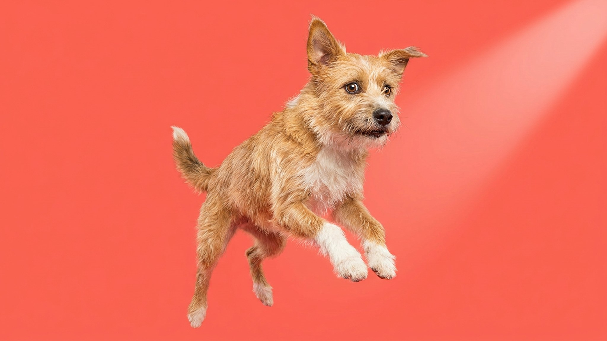

Поменяли корм — и на следующий день питомец мается животом или вовсе отказывается есть. Это предсказуемо: микрофлора кишечника не успевает перестроиться за один день. Плавный переход за 7–10 дней решает проблему почти всегда — и у кошек, и у собак.
🐾 Спросите AI-ветеринара прямо сейчас
AnimaLife — приложение, где AI-ветеринар отвечает на вопросы о кошке или собаке 24/7. Бесплатно, без записи и очередей.
Пищеварительная система кошек и собак адаптирована к конкретному составу корма. Ферменты, микрофлора, скорость переваривания — всё это настроено под привычный рацион. Новый корм с другим составом белков, жиров и клетчатки — это новая задача для ЖКТ. Если переход резкий, организм не справляется сразу: отсюда жидкий стул, рвота или отказ от еды.
Принцип простой: постепенно увеличивать долю нового корма, уменьшая долю старого.
Для пожилых питомцев, животных с чувствительным пищеварением или после перенесённых заболеваний растяните переход до 14 дней — уменьшите темп смены на каждом этапе. Если на каком-то шаге появляется расстройство, задержитесь на этом соотношении ещё 2–3 дня перед следующим шагом.
Смена корма имеет смысл в конкретных ситуациях: возрастной переход (щенок/котёнок → взрослый → пожилой), рекомендация ветеринара, уход с рынка привычного бренда, обоснованное улучшение состава. Менять корм «на акции» или просто потому что «надоел старый» — не повод. Питомец не скучает по разнообразию так, как мы думаем, а лишние переходы — лишний стресс для ЖКТ.
Лёгкое послабление стула в первые 2–3 дня — норма при любом переходе. Но есть сигналы, при которых нужен ветеринар, а не ожидание.
🐾 Дневник здоровья питомца — в кармане
Вес, прививки, симптомы и напоминания в одном приложении. AnimaLife следит за здоровьем питомца вместо вас.
🐾 Понравился разбор?
Подпишитесь на канал — каждый день разбираем по одному тревожному симптому у кошек и собак: что в пределах нормы, а когда пора к врачу. Подпишитесь, чтобы не пропустить разбор, который может спасти здоровье вашего питомца.
Материал носит информационный характер и не заменяет очную консультацию ветеринара.